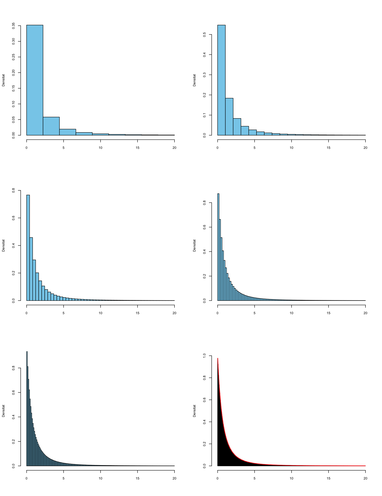
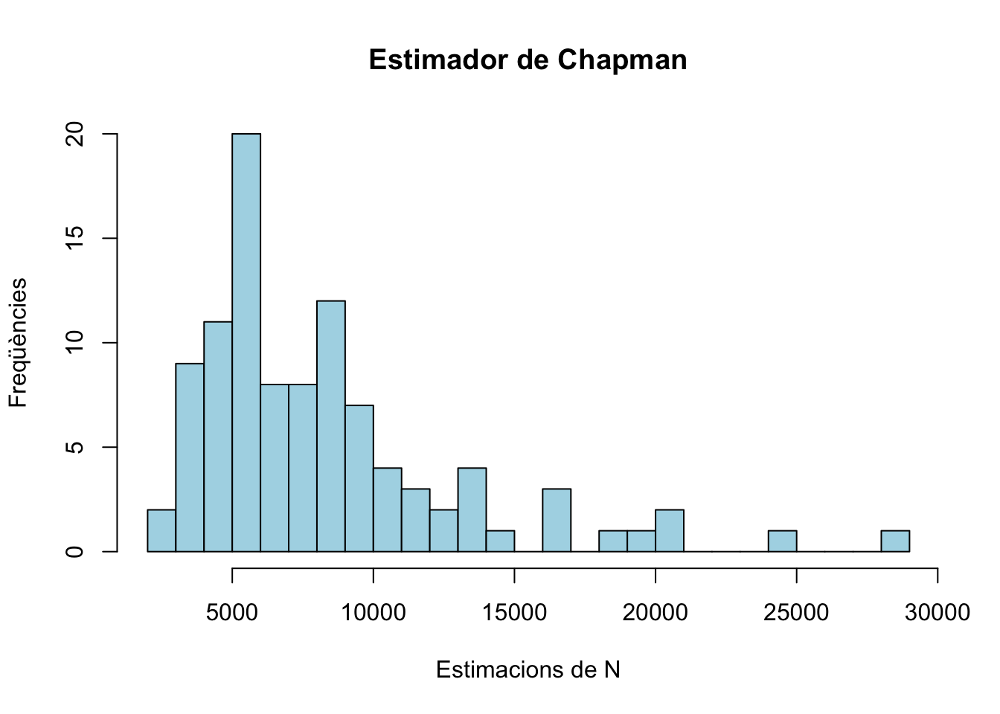

2.4 Variables aleatòries contínues
Una variable aleatòria és contínua quan els seus possibles valors són dades quantitatives contínues. Per exemple:
- Pes
- Nivell de colesterol en sang
- Diàmetre d’un tumor
En aquest curs ens restringirem a variables aleatòries contínues \(X: \Omega\to \mathbb{R}\) que satisfan la propietat extra següent: la seva funció de distribució \[ \begin{array}{rcl} F_X: \mathbb{R} & \to & [0,1]\\ x &\mapsto &P(X\leqslant x) \end{array} \] és contínua. Totes les variables aleatòries contínues que us puguin interessar en algun moment satisfan aquesta propietat, així que no perdem res imposant-la. I el que hi guanyam és que:
En particular:
Cada valor de \(X\) té probabilitat 0, però si prenem un subjecte de la població, \(X\) tendrà qualque valor sobre ell, no? Per tant, aquest valor de \(X\) és possible, malgrat tengui probabilitat 0.
De \(P(X=a)=0\) es dedueix que la probabilitat d’un esdeveniment definit amb una desigualtat és exactament la mateixa que la de l’esdeveniment corresponent definit amb una desigualtat estricta. En particular, contràriament al que passava a les variables aleatòries discretes, per a una variable aleatòria contínua sempre tenim que \[ P(X\leqslant a)=P(X<a) \] perquè \[ P(X\leqslant a)=P(X<a)+P(X=a)=P(X<a)+0=P(X<a). \]
Més exemples:
- \(P(X\geqslant a)=P(X> a)+P(X=a)=P(X> a)\)
- \(P(a \leqslant X\leqslant b)=P(a<X <b)+P(X=a)+P(X=b)\) \(=P(a<X <b)\)
2.4.1 Densitat i distribució
Sigui \(X\) una variable aleatòria contínua. Com ja hem dit, la seva funció de distribució \(F_X\) torna a ser \[ x\mapsto F_X(x)=P(X\leqslant x) \]
Però com que ara tenim que \(P(X=x)=0\) per a tot \(x\in \mathbb{R}\), no podem definir la funció de densitat de \(X\) com a \(f_X(x)=P(X=x)\). Què podem fer?
Recordau que, a les variables aleatòries discretes, \[ F_X(a)=\sum_{x\leqslant a} f_X(x) \]
En el context de matemàtiques “contínues”, la suma \(\sum\) es tradueix en una integral \(\int\). Definim aleshores la funció de densitat d’una variable aleatòria contínua \(X\) com la funció \(f_X:\mathbb{R}\to \mathbb{R}\) tal que:
\(f_X(x)\geqslant 0\), per a tot \(x\in \mathbb{R}\)
\(\displaystyle F_X(a)=\int_{-\infty}^a f_{X}(x)\, dx\) per a tot \(a \in \mathbb{R}\).

Recordau que la integral té una interpretació senzilla en termes d’àrees. En concret, donats \(a \in \mathbb{R}\) i una funció \(f(x)\), el valor de la integral \[ \int_{-\infty}^a f(x)\, dx \] és igual a l’àrea de la regió compresa entre la corba \(y=f(x)\) i l’eix d’abscisses \(y=0\) a l’esquerra de la recta vertical \(x=a\). Per tant, la funció de densitat \(f_X\) de \(X\) és la funció positiva tal que, per a tot \(a\in \mathbb{R}\), \(F_X(a)\) és igual a l’àrea sota la corba \(y=f_X(x)\) (és a dir, entre aquesta corba i l’eix d’abscisses) a l’esquerra de \(x=a\).

Quina és la idea intuïtiva que hi ha al darrere d’aquesta definició de densitat? Suposau que dibuixam histogrames de freqüències relatives dels valors de \(X\) sobre tota la població. Com que estam parlant de tota la població, la freqüència relativa de cada classe és la proporció d’individus de la població en els quals el valor de \(X\) pertany a aquesta classe: és a dir, la probabilitat que \(X\) caigui dins la classe.
Recordau que, en un histograma de freqüències relatives:
- La freqüència relativa (ara, la probabilitat) de cada classe és l’àrea de la seva barra, és a dir, l’amplada de la classe per l’alçada de la barra.
- Diem a l’alçada d’una barra la densitat de la classe (i per tant, qualque cosa tendrà a veure amb la densitat de \(X\), no ho trobau?).
- Si \(a\) és un extrem d’una classe, la freqüència relativa acumulada fins \(a\) (la probabilitat que \(X\leqslant a\)) és la suma de les àrees de les barres a l’esquerra d’\(a\).
Si dibuixam els histogrames de \(X\) prenent classes cada vegada més estretes, els seus polígons de freqüències tendeixen a dibuixar una corba, que hem acolorit en vermell en el darrer histograma de la seqüència següent:

Quan l’amplada de les classes tendeix a 0, obtenim una corba que és el límit d’aquests polígons de freqüències:

En el límit, la probabilitat que \(X\leqslant a\) serà el límit de les sumes de les àrees de les barres a l’esquerra d’\(a\), i per tant l’àrea sota aquesta corba límit a l’esquerra d’\(a\). Això ens diu que que aquesta corba és precisament la funció de densitat \(y=f_X(x)\).
Vegem algunes propietats que es dedueixen del fet que \(F_X(a)=P(X\leqslant a)\) sigui igual a l’àrea sota la corba \(y=f_X(x)\) a l’esquerra de \(x=a\):
Com que \(P(X<\infty)=P(\Omega)=1\), l’àrea sota tota la corba \(y=f_X(x)\) és 1.
\(P(a\leqslant X\leqslant b)=P(X\leqslant b)-P(X<a)\) és l’àrea sota la corba \(y=f_X(x)\) a l’esquerra de \(x=b\) manco l’àrea sota la corba \(y=f_X(x)\) a l’esquerra de \(x=a\). Per tant, \(P(a\leqslant X\leqslant b)\) és igual a l’àrea sota la corba \(y=f_X(x)\) entre \(x=a\) i \(x=b\).

Si \(\varepsilon>0\) és molt, molt petit, l’àrea sota la corba \(y=f_X(x)\) entre \(a-\varepsilon\) i \(a+\varepsilon\) és aproximadament igual a la del rectangle de base l’interval \([a-\varepsilon,a+\varepsilon]\) i alçada \(f_X(a)\), és a dir, a \(2\varepsilon\cdot f_X(a)\) (vegeu la Figura 2.5). És a dir, \[ P(a-\varepsilon\leqslant X\leqslant a+\varepsilon)\approx 2\varepsilon\cdot f_X(a). \]
Per tant, \(f_X(a)\) ens dóna una indicació de la probabilitat que \(X\) valgui aproximadament \(a\) (però no és \(P(X=a)\), que val 0). És a dir, per exemple, si \(f_X(a)=0.1\) i \(f_X(b)=0.5\), la probabilitat que \(X\) prengui un valor proper a \(b\) és 5 vegades més gran que la probabilitat que prengui un valor proper a \(a\).

Figura 2.5: L’àrea sota la corba al voltant d’\(a\) és aproximadament igual a la del rectangle d’alçada fX(a)
A les variables aleatòries discretes, definíem la moda com el valor (o els valors) més probable. Però ara no té sentit definir la moda d’una variable contínua \(X\) com el valor \(x_0\) tal que \(P(X=x_0)\) sigui màxim, perquè… \(P(X=x)=0\) per a tot \(x\in \mathbb{R}\). Aleshores, es defineix la moda d’una variable aleatòria contínua \(X\) com el valor (o els valors) \(x_0\) tal que \(f_X(x_0)\) és màxim. Com que \(f_X(x_0)\) mesura la probabilitat que \(X\) valgui “aproximadament” \(x_0\), tenim que la moda de \(X\) és el valor prop del qual és més probable que caigui el valor de \(X\).
Unes consideracions finals:
- Ho hem dit en la definició, i ho hem emprat implícitament en tota la secció, però ho tornam a repetir: \(f_X(x)\geqslant 0\) per a tot \(x\in \mathbb{R}\).
- \(f_X(x)\) no és una probabilitat, i per tant pot ser més gran que 1. Per exemple, el gràfic següent mostra la densitat d’una variable normal \(N(0,0.01)\) (vegeu la Secció 2.5), que arriba a valer gairebé 40.

- La funció de densitat \(f_X\) no té per què ser contínua, malgrat la funció de distribució \(F_X\) ho sigui.
2.4.2 Esperança, variància, quantils…
L’esperança i la variància d’una variable aleatòria contínua \(X\), amb funció de densitat \(f_X\), es defineixen com en el cas discret, substituint la suma \(\sum_{x\in D_x}\) per una integral, i tenen les mateixes propietats.
La mitjana, o esperança (o valor mitjà, valor esperat…), de \(X\) és \[ E(X)=\int_{-\infty}^{\infty}x \cdot f_{X}(x)\, dx \] És a dir, és l’àrea compresa entre l’eix d’abscisses i la corba \(y=xf_X(x)\). Com en el cas discret, també la indicarem de vegades amb \(\mu_X\).
Aquest valor té la mateixa interpretació que en el cas discret:
Representa el valor mitjà de \(X\) sobre el total de la població.
És (amb probabilitat 1) el límit de les mitjanes aritmètiques de mostres aleatòries de mida \(n\) de valors de \(X\), quan \(n\to \infty\).
Si \(g:\mathbb{R}\to \mathbb{R}\) és una funció contínua, l’esperança de \(g(X)\) és \[ E(g(X))=\int_{-\infty}^{+\infty} g(x) f_X(x)dx \]
La variància de \(X\) és \[ \sigma(X)^2=E((X-\mu_X)^2)=\int_{-\infty}^{+\infty} (x-\mu_X)^2 f_X(x)dx \] i es pot demostrar que és igual a \[ \sigma(X)^2=E(X^2)-\mu_X^2. \] També la indicarem de vegades amb \(\sigma_X^2\).
La desviació típica de \(X\) és \[ \sigma(X)=+\sqrt{\sigma(X)^2} \] i també la indicarem de vegades amb \(\sigma_X\).
Com en el cas discret, la variància i la desviació típica quantifiquen la variabilitat dels resultats de \(X\) respecte del seu valor mitjà \(\mu_X\).
Aquests paràmetres de \(X\) tenen les mateixes propietats en el cas continu que en el discret. Les recordam:
Si \(b\) és una variable aleatòria constant, \(E(b)=b\) i \(\sigma(b)^2=0\).
Si \(\sigma(X)^2=0\), \(X\) és constant.
Si \(X_1,\ldots,X_n\) són variables aleatòries i \(a_1,\ldots,a_n,b\in \mathbb{R}\), \[ E(a_1X_1+\cdots+a_nX_n+b)=a_1E(X_1)+\cdots+a_nE(X_n)+b \]
Si \(X\leqslant Y\), aleshores \(E(X)\leqslant E(Y)\).
Si \(a,b\in \mathbb{R}\), \(\sigma(aX+b)^2=a^2 \sigma(X)^2\) i \(\sigma(aX+b)=|a|\cdot \sigma(X)\).
Si \(X_1,\ldots,X_n\) són variables aleatòries independents (i, en principi, només en aquest cas) i \(a_1,\ldots,a_n,b\in \mathbb{R}\), \[ \begin{array}{l} \sigma(a_1X_1+\cdots+a_nX_n+b)^2=a_1^2\cdot\sigma(X_1)^2+\cdots+a_n^2\cdot\sigma(X_n)^2\\ \sigma(a_1X_1+\cdots+a_nX_n+b)=\sqrt{a_1^2\cdot\sigma(X_1)^2+\cdots+a_n^2\cdot\sigma(X_n)^2} \end{array} \] Si no són independents, aquestes igualtats poden ser falses.
El quantil d’ordre \(p\) (o \(p\)-quantil) d’una variable aleatòria contínua \(X\) és el valor \(x_p\in \mathbb{R}\) més petit tal que \[ F_X(x_p)=P(X\leqslant x_p)=p \]
La mediana de \(X\) és el seu 0.5-quantil, el primer i tercer quartils són el seu 0.25-quantil i el seu 0.75-quantil, etc.